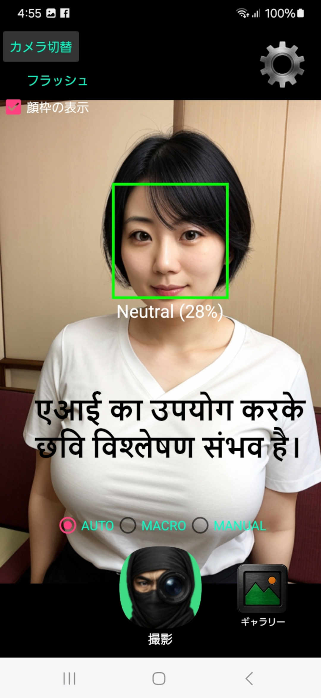
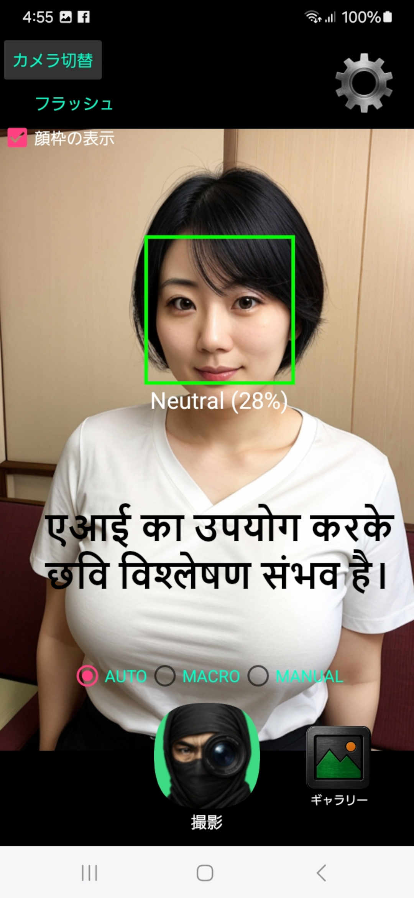

बिना पता चले तस्वीर लें — NinjaCamAI, एक निन्जा की कला।
चाहे सार्वजनिक जगह हो या निजी पल, आपका फोन एक मूक गवाह बन जाता है।
- पूरी तरह साइलेंट शूटिंग: कोई शटर की आवाज़ नहीं। छाया की तरह कैप्चर करें।
- AI चेहरे की पहचान: मुस्कान पहचान कर ऑटोमैटिक क्लिक। एकदम निन्जा टाइमिंग।
- उम्र, लिंग और भावनाओं की पहचान: सिर्फ तस्वीर नहीं — AI आपको समझता है।
- टाइमर और ऑटो शॉट: सेट करें और छोड़ दें, जैसे एक स्थापित कैमरा।
- वाइब्रेशन डिटेक्शन: सिर्फ हलचल पर प्रतिक्रिया करता है। जैसे असली निन्जा।
- इनबिल्ट गैलरी: सेलेक्ट करें, हटाएं, या साझा करें। भागों को हिला भी सकते हैं।
- फुल कैमरा फ़ीचर: फोकस, ज़ूम, फ्लैश... सब कुछ शामिल।
- 100% ऑफ़लाइन: सभी डेटा डिवाइस पर। कुछ भी लीक नहीं होगा।
- पूरी तरह मुफ्त: बिना किसी सीमा के। इंस्टॉल करें और निन्जा बन जाएं।
- ⚠️ चेतावनी: इस ऐप का उपयोग अवैध निगरानी के लिए न करें।
📹 परिचय वीडियो (सबटाइटल ऑन करने की सिफारिश है)
1. https://youtube.com/shorts/LHtdWf3iZi8
2. https://youtube.com/shorts/JKdhha0Bdic
 
